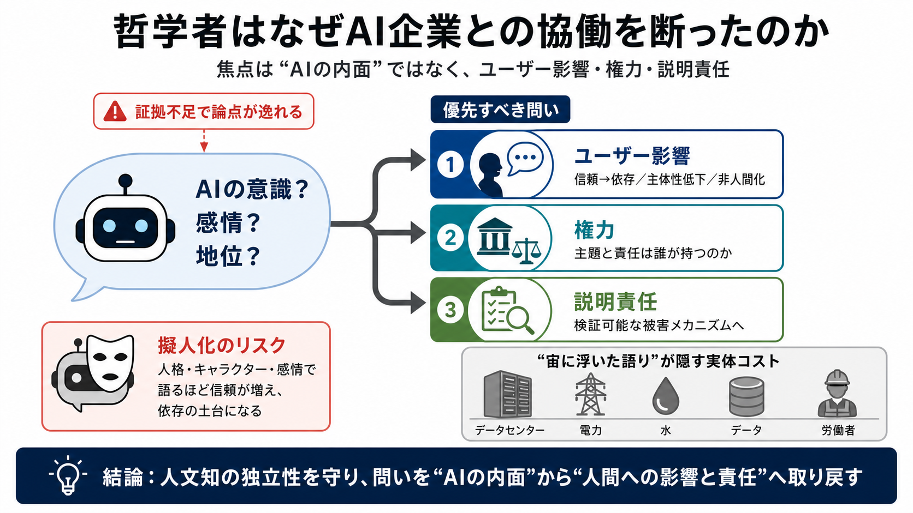

Report on Operations
December 2024 and closing the year at EUR 153.40. Reply’s market capitalisation increased to EUR 5.7 billion. In January…

哲学者の拒否、その論点
AI企業が人文科学を呼び込む流れに対し、「問いの立て方」が誤る危険を問題にする論考です。焦点は意識の形而上学より、ユーザー影響・権力・説明責任にあります。
擬人化が招くズレ
AIを「人格」「キャラクター」「感情」で語るほど、人はそれを信頼しやすくなります。記事は、これは言語の好みではなく、依存や非人間化につながりうる点を警告します。
焦点のすり替え
著者が重視するのは「AIが意識を持つか」ではなく、ユーザーへの実害と、企業が負うべき説明責任です。形而上学的な問いが「証拠不足のまま」先行すると、論点がずれていくと警告します。
誘いから見える構図
著者（Carmody Grey）はAnthropicから「知恵の伝統」との研究協働を誘われた経験を出発点にします。関心はあるが、「関与が見返りとしてどこへ向かうのか」を疑う姿勢が土台です。
言語戦略の働き
企業側は、Claudeの“地位”やキャラクター形成、さらに「意識や傷つけられうる存在か」といった問いを前面化します。著者は、LLMの“感情のようなもの”や内部状態の提示が、擬人化による信頼獲得になりうると批判します。
優先順位の入れ替え
著者は代替として、ユーザーへの影響（依存・非人間化など）、権力の集中、説明責任の欠如を中心に据えるべきだと述べます。これは「意識の有無」より検証可能な領域に研究を戻す試みです。
形而上学の扱い
AIの“意識”や“思考”をめぐる議論は、証拠が乏しいにもかかわらず「問いを開いたままにする」ことで論点がすり替わる、と警告されます。結局、重要な被害メカニズムや責任の所在が見えにくくなるからです。
主題転換の例
著者が評価する教皇レオのAI関連文書は、AIそのものの分類に終始せず、人間の尊厳と目的、そして技術が与える影響へ議論を移します。AI討論の“焦点喪失”への処方箋として位置づけられます。
善意と市場の接続
「道徳形成の協働」は善意でもあり得ますが、商品販売やブランド信用（PR）の構造から逃れられない可能性がある、と疑います。つまり独立性が損なわれるリスク評価です。
宙に浮く語り
AIは計算基盤という物理的インフラに支えられますが、そのダメージ（資源・データ・社会的コスト）が技術の“宙に浮いた語り”で覆い隠される、と強調されます。倫理を語るなら影響の実体まで見る必要がある、という論点です。
賛同できる点／慎重な点
強みは、倫理を「意識の有無」からユーザー影響・権力・責任・環境コストへ引き戻そうとする点です。一方で、意識研究まで無価値と決め打ちするように見える部分には慎重さが必要だ、と考えます。
独立性を守る
結論として著者は、AI企業との関係を通じた人文系の“取り込み”に抵抗し、学術と信仰の側に独立性を保つべきだと訴えます。問いは「AIの内面」より、ユーザー影響・説明責任・技術が与える実体のコストへ。
注：本デッキは、ユーザー提示の要約・論点（抜粋）に基づく圧縮です。
December 2024 and closing the year at EUR 153.40. Reply’s market capitalisation increased to EUR 5.7 billion. In January…
Jan 7, 2020 — If you think that they are worth addressing individually, copy the text into your response and add your re…
Let’s break it down by platform. On Facebook, customers can either “recommend” or “not recommend” your business, and thi…
Keep your reply brief, genuine, and personal. Thank the customer, reference a detail from their review, and welcome them…
Tips: Helpful and positive replies to reviews can show that you're responsive to your customers. Learn tips to write b…